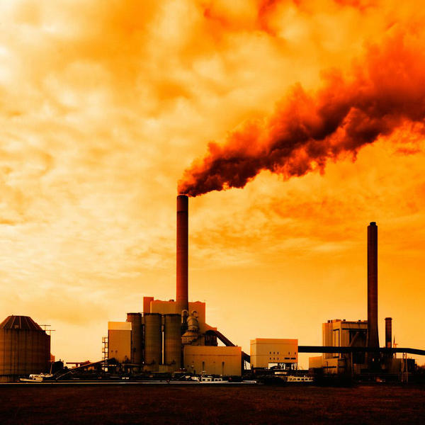
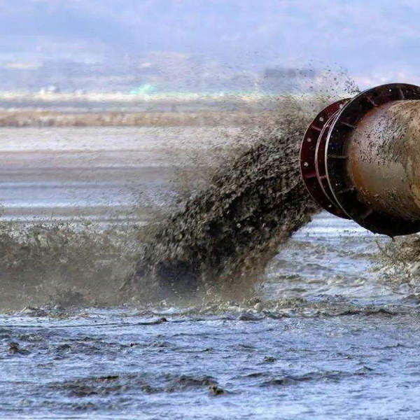
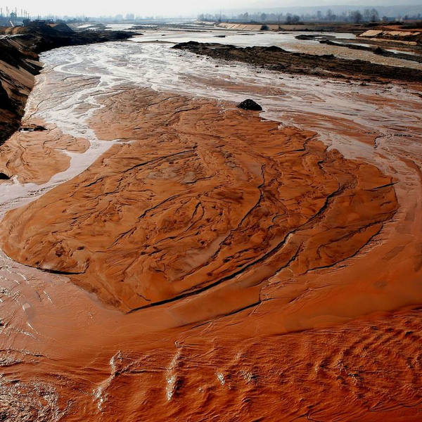
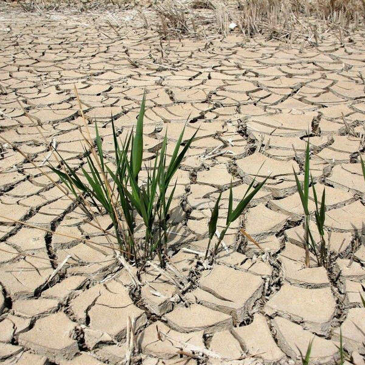
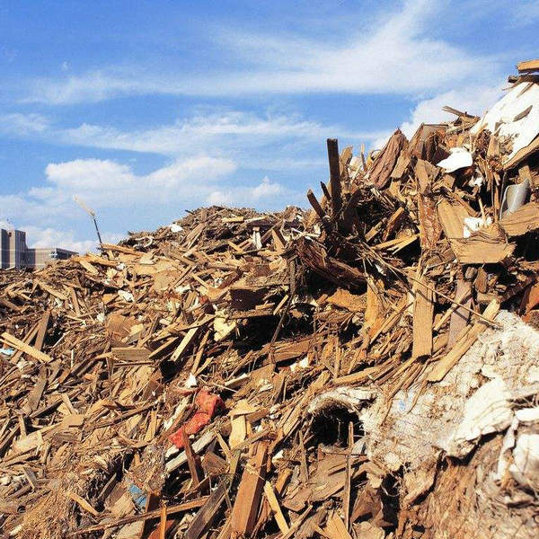
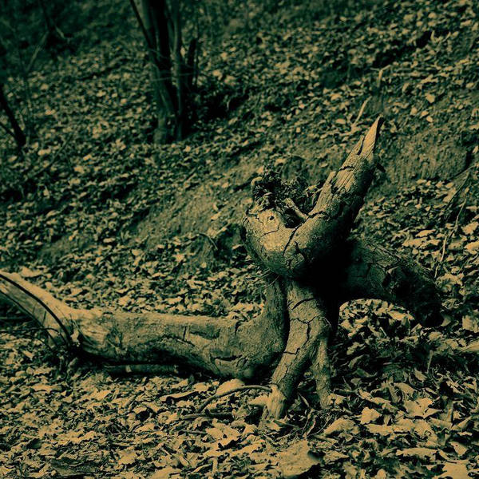

环境现状

1、大气污染
中国大气环境面临的形势非常严峻，大气污染物排放总量居高不下。2011年中国二氧化硫年排放量高达1857万吨，烟尘1159万吨，工业粉尘1175万吨，大气污染仍然十分严重。

2、水污染
中国是一个干旱缺水严重的国家。淡水资源总量为28000亿立方米，占全球水资源的6%，仅次于巴西、俄罗斯和加拿大，居世界第四位但人均只有2200立方米。

3、土地沙化
中国国土上的荒漠化土地已占国土陆地总面积的27.3%，而且，荒漠化面积还以每年2460平方公里的速度增长。中国每年遭受的强沙尘暴天气由50年代的5次增加到了90年代的23次。

4、水土流失
中国每年流失的土壤总量达50多亿吨，每年流失的土壤养分为4000万吨标准化肥（相当于中国一年的化肥使用量）。自1949年以来，中国水土流失毁掉的耕地总量达4000万亩，这对中国的农业是极大损失。

5、旱灾水灾
20世纪50年代中国年均受旱灾的农田为1.2亿亩，90年代上升为3.8亿亩。1972年黄河发生第一次断流，1985年后年年断流，1997年断流天数达227天。有关专家经调查推测：未来15年内中国将持续干旱。

6、生物破坏
中国是生物多样性破坏较严重的国家，高等植物中濒危或接近濒危的物种达4000-5000种，约占中国拥有的物种总数的15%-20%，高于世界10%-15%的平均水平。

7、垃圾处理
中国工业固体废物年产生量达8.2亿吨，综合利用率约46%。中国城市生活垃圾年产生量为1.4亿吨，达到无害化处理要求的不到10%。塑料包装物和农膜导致的白色污染已蔓延中国各地。